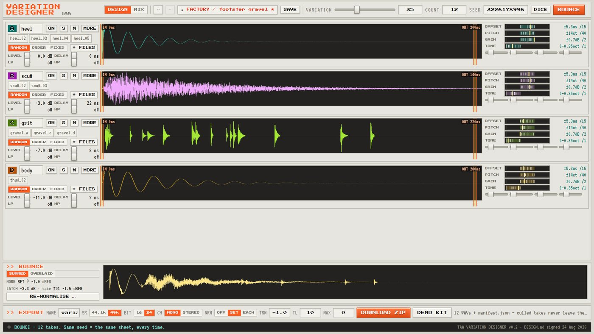
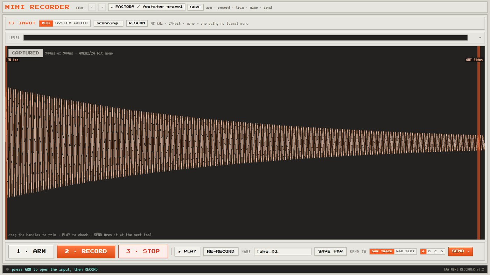
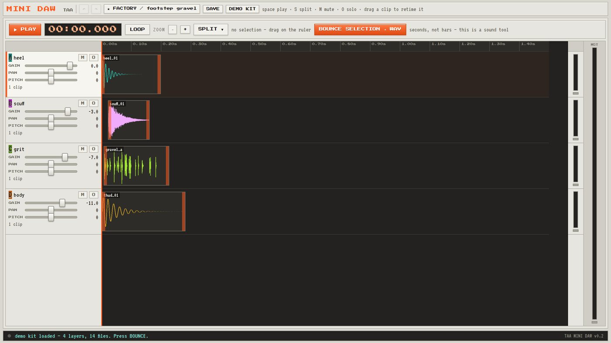

Variation Bench
Get a sound in. Do the quick edit. Turn it into twenty. Three small tools that hand work to each other, and not one of them asks you to open a DAW.
They run in this browser, free, right now — no install, no account, and your files never leave your machine.

>> WHY THESE EXIST
Game sound needs the same thing over and over: the same footstep, twenty times, never identical. The usual answers are to record twenty, or to jitter the pitch at runtime and hope nobody notices. Pitch-shifting scales a sound whole, which is exactly why a random-pitch footstep still sounds like one footstep.
The variation that actually fools the ear is the timing between layers — heel and scuff four milliseconds apart is a different footstep from fourteen, using the same files. Doing that at playback time costs you on every single play, forever. Doing it here costs you once, at design time, and the engine just plays a file.
>> THE THREE TOOLS
MINI RECORDER
Pick an input, watch the meter, hit record. Trim what you caught with two handles, name it, and send it straight to a Mini DAW track or a Variation Designer slot — or just save the WAV.
Mic or system audio, 48 kHz, 24-bit, mono. One path, no format menu to get lost in.

▶ OPEN MINI RECORDERneeds mic permission — your browser will askMINI DAW
Four tracks, a timeline in seconds rather than bars, and a transport with a running clock. Gain, pan, pitch, mute, solo and real meters per track. Drag a clip to retime it, press S to split, loop a selection, then bounce what you have to a single WAV.
It is the tool you would otherwise open Reaper for, and it opens in about a second.

▶ OPEN MINI DAWpress DEMO KIT and it fills itself — nothing to find firstVARIATION DESIGNER
Drop a set of files into each of four layers. Say how far each layer may drift in timing, pitch, level and tone, then turn a single VARIATION knob to scale all of it at once. Bounce a sheet of takes, listen through them, keep the ones that earn it and re-roll the rest.
Every sheet has a seed: the same seed and the same dials give you the same takes, every time. Download the set as WAVs in a zip with a manifest — and the takes you culled never leave the app.
>> HOW THEY FIT TOGETHER
They are three tools, but one path. Anything one of them makes, the next one will take.
>> WHERE THIS IS GOING
The same three tools run as tabs inside the Unreal Editor, on 5.6, 5.7 and 5.8. That version is in development and is not released yet — the browser tools on this page are the ones you can use today, and they stay free permanently.
These are real screenshots of it running, not mock-ups. It is honest about where it is unfinished — the recorder's own screen greys out what is not built yet and flags what is still unresolved, rather than hiding it.


>> THE TECHNICAL BIT
It all runs in your browser. Your files are never uploaded, there is no account, and there are no trackers on this page.
Deterministic. A seed names a sheet of takes. The same seed and the same dials produce the same takes, every time, so a preset recalls exactly what you had.
Export: WAV, 44.1 kHz or 48 kHz, 16 or 24-bit, mono or stereo. Sets come down as a zip with a manifest.json.
Why bake it? Layer at playback time and you pay for the layering on every play, forever. Bake it here and you pay once, at design time.
Royalty free. What you make with these is yours — any project, commercial or not, no attribution.